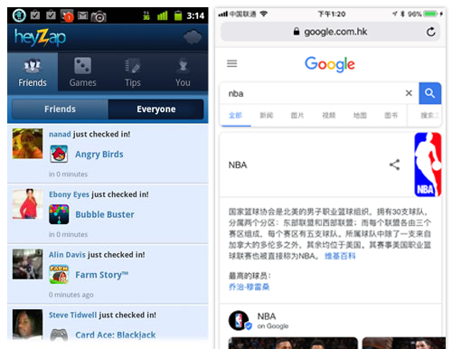
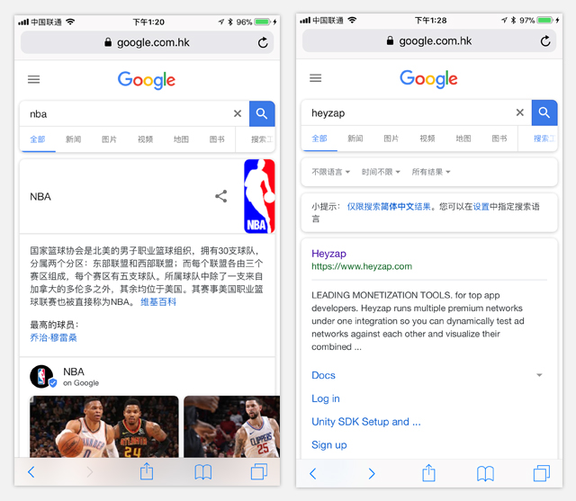
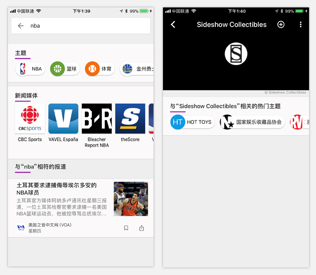
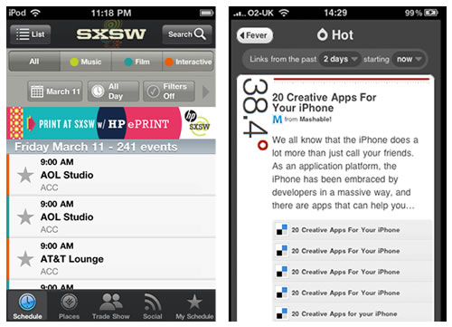
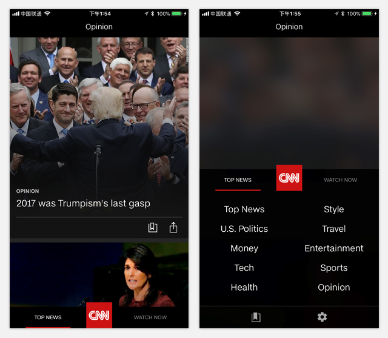
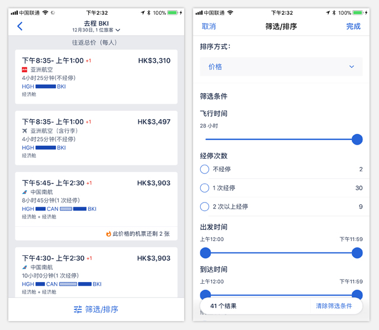
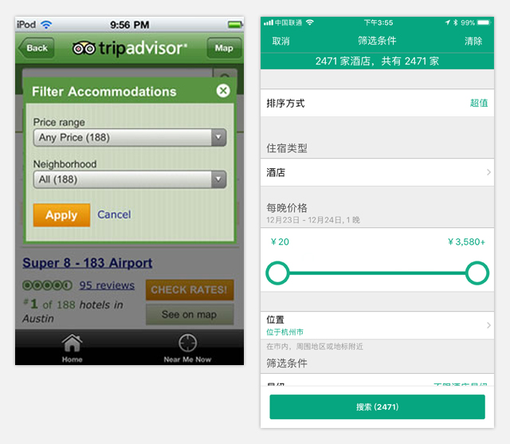

#筛选器#
大量数据集需要额外的过滤，也叫做筛选。筛选依赖于用户的选择标准，从而细化搜索结果集或一组大型对象。常见的过滤模式包括：
·直列式筛选器（Onscreen Filter）
·抽屉/折叠式筛选器（Filter Drawer）
·对话框式筛选器（Filter Dialog）
·表格式筛选器（Filter Form）
#直列式筛选器#
与页面的元素排序逻辑以及展示方式类似，屏幕上直接显示对象结果或者对象列表。通过设计tab按钮来筛选目标对象。HeyZap使用标准按钮tab栏，而谷歌采用单排横向式。

左为HeyZap，右为Google
Google的筛选器点击最右侧的“搜索工具”时，会额外展示出一列新的筛选条辅助进一步的筛选。

右为新增筛选条
Google Play报停采用了双排筛选条，根据用户感兴趣的检索词匹配出“内容相关”以及“媒体相关”两类筛选偏好。

Google Play报停
注意：最好不要尝试用此类设计法则去做主导航，而是作为过滤相关内容的时候采取这种方法。
SXSW提供了一双排不同维度的筛选器，Feed a Fever news reader运用了一个超级简单的组合单排筛选器，通过描述+被描述的对象（筛选器）来建立起一个清晰易懂的概念模型。

左为SXSW，右为Feed a Fever news reader
筛选器应该措辞明确，且易于理解。被选中的筛选项应及时告知用户或者呈现出已被选的反馈提示。
#抽屉/折叠式筛选器#
CNN新闻采取的是抽屉/折叠式筛选器，通过一个handle来提示筛选器的入口，用户通过点击可以将被折叠/收起的筛选器浮层展示出来。

包括作为全球最大的在线旅游公司Expedia，也是采用了折叠式的筛选器。但Expedia有一点做的非常好，就是在筛选器展开时如何给用户预期匹配的结果数量，在右图中，下方会有一个
常驻的bar，上面展示了根据目前的筛选项组合后匹配的结果数量，这样能保证用户在筛选器展开的状态下依然能感知到结果页的结果范围，确保用户不用担心因为筛出来的结果太少或没有
而反复展开或收起筛选器。

Expedia
#对话框&表格式式筛选器#
在早起的一些app上会采用对话框式的筛选器，比如说Trip Advisor，但现在他们也开始采用折叠式的筛选器。

Trip Advisor在2012年的筛选器（左）和2017年的筛选器（右）
注意：保持选项列表短，避免滚动。考虑一个更长或多选择过滤选项过滤形式。不要过度设计过滤器，一个简单的屏幕过滤器或抽屉通常就足够了。
如果需要筛选器表单，请遵循表单设计最佳实践。
-Theresa Neil